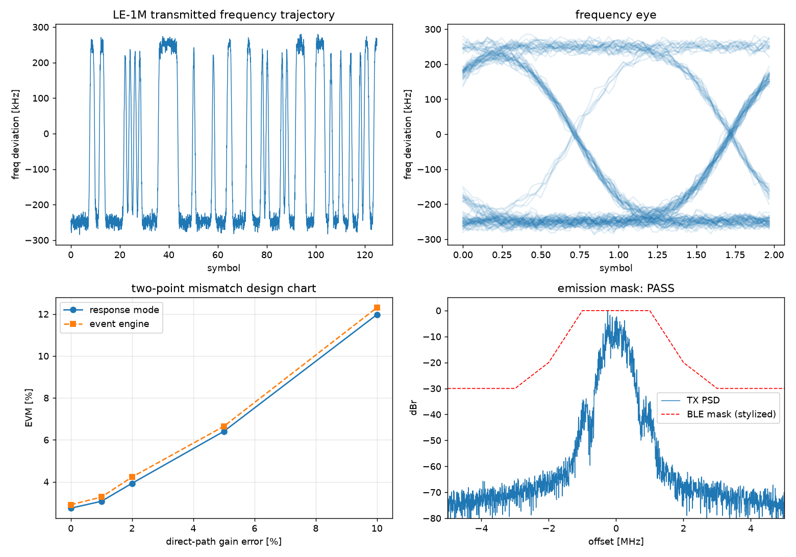
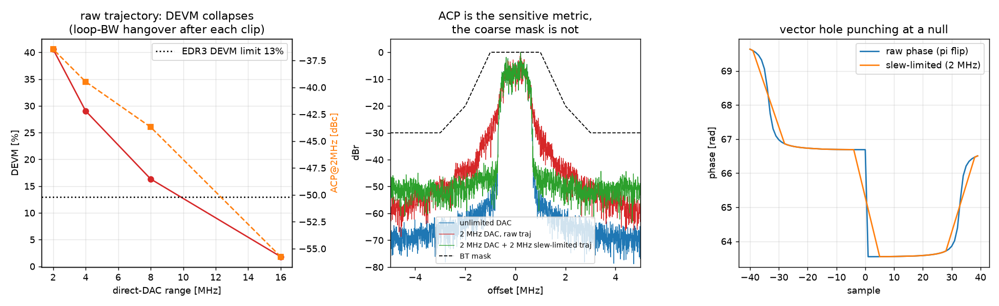
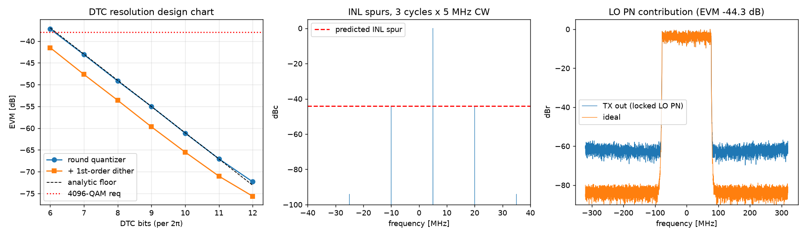
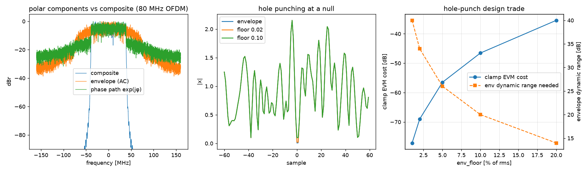
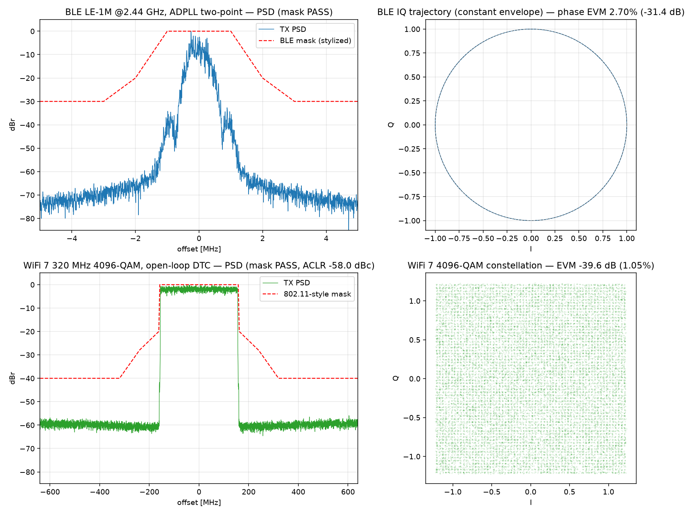
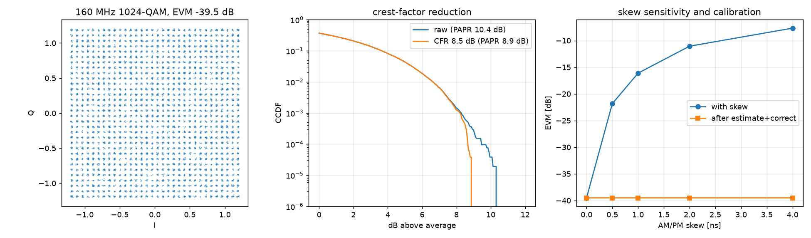
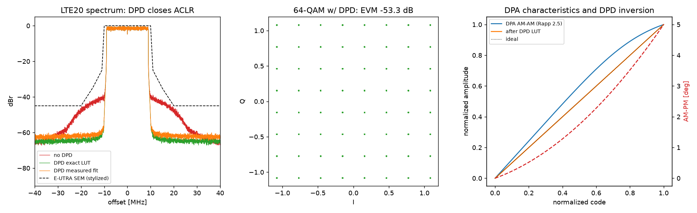
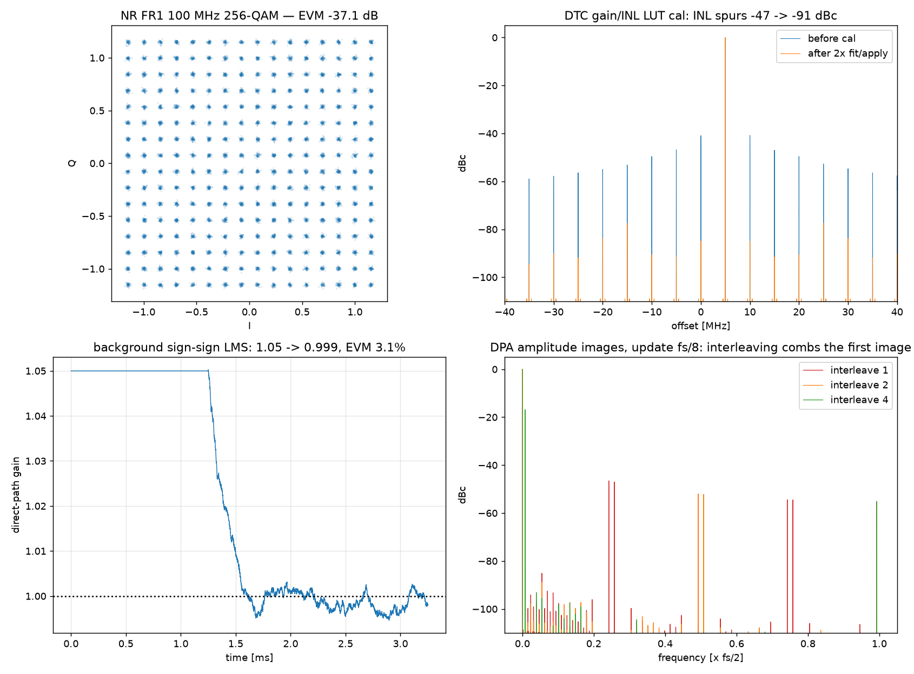
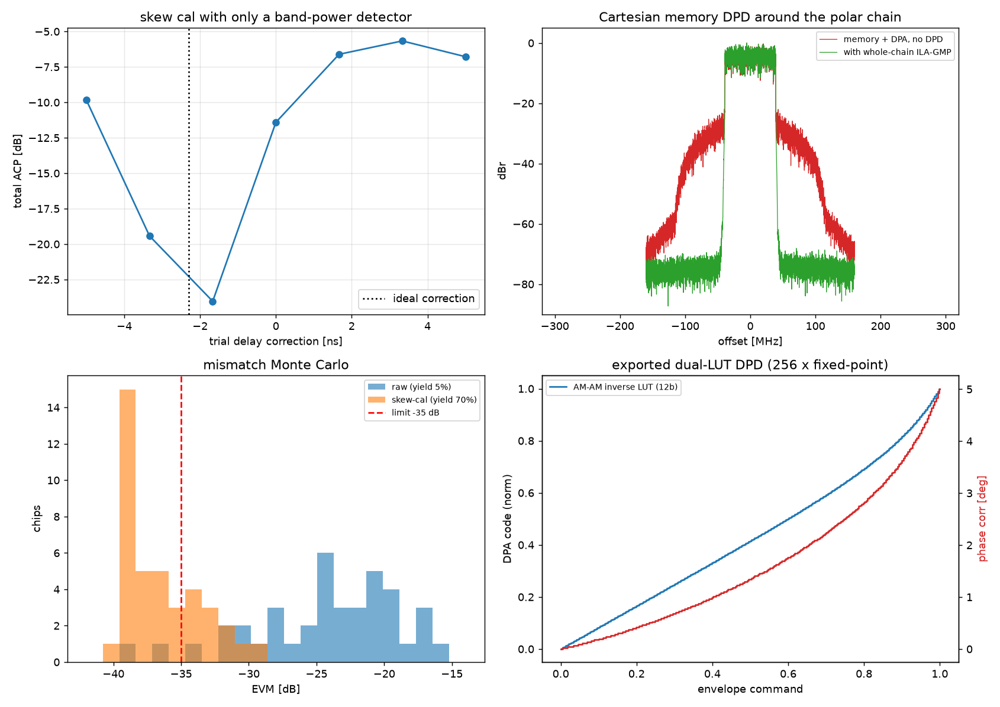
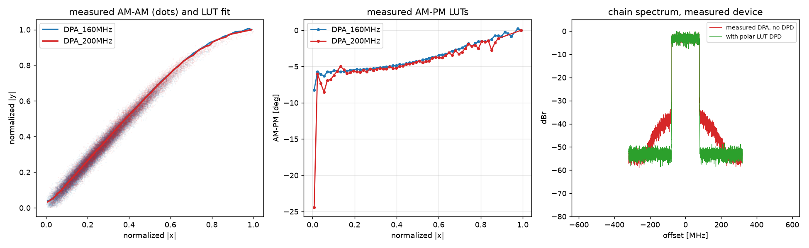

Behavioral simulation of digital polar transmitters — an illustrated design guide. Two architectures over one composable chain: ADPLL two-point modulation (narrowband: BLE, BT EDR, LTE ≤ 20 MHz) and open-loop DTC phase modulation (wideband: WiFi 6/7 ≤ 320 MHz, 5G NR ≤ 200 MHz), each driving a unit-cell digital PA. Python (numpy/scipy/matplotlib), 87 physical-assertion tests, 9 worked examples. 数字极坐标发射机行为级仿真——图文设计指南。两种架构共用一条可组合链路：ADPLL 两点调制 （窄带：BLE、BT EDR、LTE ≤20 MHz）与开环 DTC 相位调制（宽带：WiFi 6/7 ≤320 MHz、5G NR ≤200 MHz）， 均驱动单元阵列数字 PA。Python 实现（numpy/scipy/matplotlib），87 项物理量断言测试，9 个成套示例。
Waveform → [CFR] → polar split → envelope path (quantize · skew · DPA code) ─┐
└─ phase path (PhaseModulator) ────────────────┤→ DPA → y → EVM/ACLR/mask
[PolarDPD LUTs applied before both paths]
A polar TX splits the complex baseband into envelope and phase; the digital PA turns the amplitude
code into RF amplitude while a phase modulator steers the carrier. Everything from BLE to 320 MHz WiFi shares one
PolarTX pipeline; only the PhaseModulator block swaps — ADPLLTwoPoint for the
narrowband flavor, DTCPhaseModulator for the wideband one. Every impairment (quantization, INL, mismatch,
skew, phase noise, ZOH images, memory) lives in exactly one block, and every result object carries per-stage taps so
calibrations can observe what hardware would observe.
极坐标发射机把复基带拆成包络与相位：数字 PA 把幅度码变成射频幅度，相位调制器操纵载波。从 BLE 到
320 MHz WiFi 全部共用一条 PolarTX 管线，只更换 PhaseModulator 模块——窄带用
ADPLLTwoPoint，宽带用 DTCPhaseModulator。每种损伤（量化、INL、失配、时延失配、相噪、ZOH
镜像、记忆效应）只在一个模块里建模；结果对象携带各级 tap，校准算法只能看到硬件也能看到的观测量。
Inherited from the sibling pllsim library's discipline: quantization floors, INL spur
levels, ZOH image levels, envelope-quantization EVM and phase-noise budgets are all available in closed form
(polartx.analysis.responses), and the test suite asserts simulation-vs-analytic agreement (0.2–2 dB
depending on the effect). When the two disagree, one of them is wrong — several sections below exist because finding
out which one was wrong taught us something.
继承姊妹库 pllsim 的纪律：量化噪底、INL 杂散电平、ZOH 镜像电平、包络量化 EVM、相噪预算
全部有闭式解析（polartx.analysis.responses），测试套件断言仿真与解析吻合（按效应 0.2–2 dB）。两者不一致
时必有一方是错的——下文好几节的存在，正是因为查明谁错了让我们学到了东西。
The phase-path engine (ADPLL, DTC, DCO/Leeson, ΣΔ, LMS calibrators) is an adapted copy of
pll_simulator; the waveform/metrics/PA infrastructure (OFDM, QAM, EVM/ACLR/mask/CCDF, CFR, delay
alignment, ILA) comes from PA_DPD. Copies live under polartx.vendor with per-file origin
headers; the three intentional divergences (FracConfig extraction, mod_freq_dp range-limited direct DAC,
dp_cal per-cycle hook) are documented in vendor/__init__.py. WiFi OFDM generation is
regression-tested bit-exact against the padpd generator.
相位路径引擎（ADPLL、DTC、DCO/Leeson、ΣΔ、LMS 校准器）改编移植自
pll_simulator；波形/指标/PA 基础设施（OFDM、QAM、EVM/ACLR/mask/CCDF、CFR、延迟对齐、ILA）来自
PA_DPD。副本位于 polartx.vendor，逐文件注明出处；三处刻意改动（FracConfig 抽取、
mod_freq_dp 受限直通 DAC、dp_cal 逐周期挂钩）记录在 vendor/__init__.py。
WiFi OFDM 生成与 padpd 逐位回归。
The data enters the loop twice: at the FCW (lowpass through the closed loop h) and as a direct DCO
push (highpass 1−h). Matched gains sum to exactly one at every offset, so a 1 Mb/s GFSK stream rides through a
100 kHz loop untouched; a direct-path gain error ε leaves ε·highpass(φ) — the EVM-limiting spec
that the two-point calibrations in §7 exist for. ADPLLTwoPoint ships two engines, cross-checked by
tests: a linearized z-domain response mode (exact Htp on the FFT grid + phase noise synthesized from
the analyze() budget; full frames in seconds) and the cycle-accurate event mode that calls the
vendored ADPLL.simulate(mod_freq=…) engine. Across the whole mismatch sweep the two agree within 0.3%
EVM.
数据从两个点进入环路：FCW（经闭环 h 低通）与 DCO 直推（高通 1−h）。两点增益匹配时响应在所有频偏处
严格相加为 1，1 Mb/s GFSK 穿过 100 kHz 环路毫发无损；直通点增益误差 ε 留下残差
ε·highpass(φ)——正是第 7 节两点校准针对的 EVM 决定性规格。ADPLLTwoPoint 提供两个引擎并被
测试交叉验证：线性化 z 域 response 模式（FFT 网格上的精确 Htp + 由 analyze() 预算
合成的相噪；整帧秒级）与逐参考周期的 event 模式（直接调用移植的 ADPLL.simulate(mod_freq=…)）。
整个失配扫描上两引擎 EVM 吻合 0.3% 以内。

BT EDR's 8DPSK payload is not constant-envelope: the trajectory crosses the origin and the polar phase flips by π in one sample — fs/2 = 16 MHz of instantaneous deviation the direct DAC must cover. DEVM alone hides this (it samples symbol centers, and the DPA output is tiny at the null). The moment the DAC range is finite the story changes: the clipped phase is recovered only through the loop's lowpass path at loop-BW timescale (~10 symbols of "hangover"), so clipping just 1% of samples collapses DEVM to 40% and costs ~20 dB of ACP — while the coarse spectral mask still passes. ACP is the sensitive metric; the mask is not. BT EDR 的 8DPSK 载荷不是恒包络：轨迹穿过原点时极坐标相位在一个采样内翻转 π——直通 DAC 需要 覆盖 fs/2 = 16 MHz 的瞬时频偏。仅看 DEVM 会掩盖此事（它在符号中心采样，而过零处 DPA 输出幅度趋零）。 DAC 范围一旦有限，剧情反转：被削掉的相位只能靠环路低通路径以环路带宽时间尺度（约 10 个符号的"宿醉"）补回， 削掉 1% 的采样就让 DEVM 崩到 40%、ACP 恶化约 20 dB——而粗粒度频谱 mask 依然 PASS。ACP 才是敏感指标，mask 不是。
The fix is trajectory-side: vector hole punching linearizes the unwrapped phase across each null (slew-triggered, window widened iteratively until compliant). A 2 MHz slew limit brings the required DAC range from 16 MHz to 2 MHz with zero clipping, DEVM back to 2.4%, at an exactly-computable −32 dB trajectory cost. A negative result worth keeping: at a fixed slew bound, a smoothstep S-curve loses to plain linear interpolation — its 1.5× wider window costs more than its continuous derivative saves (locked in tests). 解法在轨迹侧：矢量 hole punching 在每个过零点把展开相位线性化（按斜率触发、窗口迭代加宽 直到达标）。2 MHz 斜率限制把所需 DAC 范围从 16 MHz 压到 2 MHz、零削波、DEVM 回到 2.4%，代价是精确可算的 −32 dB 轨迹 EVM。一个值得保留的负结果：固定斜率上限下 smoothstep S 曲线输给普通线性插值——1.5× 加宽的窗口代价大于导数 连续的收益（测试固化）。

A clean integer-PLL LO is phase-shifted sample-by-sample by a DTC covering one carrier UI (2π, wrapping modulo the range). Everything runs vectorized on the baseband grid — up to 1.28 GS/s at WiFi-320 — with n-bit phase quantization (optional first-order error-feedback dither, vectorized via the diff-of-floor-of-cumsum identity), gain error, INL (pllsim conventions, in UI), jitter, a locked-LO Leeson model (flat below the PLL loop BW), and a phase-update clock slower than the grid (ZOH → images). The design charts: 4096-QAM needs ~10 bits plain, ~9 with dither; the quantization floor matches (2π/2B)/√12·√(1/OSR) within 0.2 dB; INL spurs and ZOH images land on their closed forms within 2 dB. 干净的整数 PLL LO 被 DTC 逐样本移相，覆盖一个载波 UI（2π，按范围回绕）。全部在基带网格上向量化 运行——WiFi-320 高达 1.28 GS/s——含 n-bit 相位量化（可选一阶误差反馈 dither，用 diff-of-floor-of-cumsum 恒等式向量化）、增益误差、INL（沿用 pllsim 约定，UI 单位）、抖动、锁定 LO 的 Leeson 模型（环内平坦）、以及慢于 网格的相位更新时钟（ZOH → 镜像）。设计图结论：4096-QAM 裸量化需 ~10 bit，dither 省 ~1 bit；量化噪底与 (2π/2B)/√12·√(1/OSR) 差 0.2 dB 内；INL 杂散与 ZOH 镜像与闭式预测吻合 2 dB 内。

The polar split is nonlinear: for an 80 MHz OFDM channel the envelope occupies 2.1× and the
phase path 3.2× the composite 99% bandwidth. Magnitude hole punching (clamping the envelope at
env_floor·rms) bounds the DPA dynamic range at an exactly computable EVM cost — the clamp-error power,
asserted in tests to 0.01 dB — but note it does not shrink the phase-path bandwidth: the π-flips remain
(the DTC wraps them mod 2π); bounding the phase slew is the separate, trajectory-side operation of §3.
极坐标分解是非线性的：80 MHz OFDM 信道分解后，包络占用复合信号 99% 带宽的 2.1×，相位路径 3.2×。
幅度域 hole punching（把包络钳制在 env_floor·rms）以精确可算的 EVM 代价（钳位误差功率，测试断言到
0.01 dB）约束 DPA 动态范围——但注意它不会压缩相位路径带宽：π 翻转仍在（DTC 按 mod 2π 处理）；限制相位
斜率是第 3 节那个独立的轨迹侧操作。

| Chain链路 | Configuration配置 | EVM | ACLR / mask |
|---|---|---|---|
| BLE LE-1M/2M | ADPLL two-point, 100 kHz loop, −112 dBc/Hz DCOADPLL 两点，100 kHz 环路，−112 dBc/Hz DCO | 2.7% (Δf1avg 250.3 kHz) | mask PASS |
| BT EDR2/EDR3 | same phase path + SRRC envelope (PAPR 3.2 dB)同一相位路径 + SRRC 包络（PAPR 3.2 dB） | DEVM 1.8% (lim 20/13%) | mask PASS |
| LTE 20 MHz 64/256-QAM | ADPLL @122.88 MHz + compressive DPA + polar DPDADPLL @122.88 MHz + 压缩性 DPA + polar DPD | −53.3 dB (−37.2 no DPD) | ACLR1 −62.6 dBc, SEM PASS |
| WiFi 6 80/160 MHz 1024-QAM | 11-bit dithered DTC + 10-bit DPA + CFR 8.5 dB11-bit dithered DTC + 10-bit DPA + CFR 8.5 dB | −40.9 / −39.5 dB | −54/−58 dBc, PASS |
| WiFi 7 320 MHz 4096-QAM | as above, WiFi-7-class locked LO同上，WiFi-7 级锁定 LO | −39.6 dB (req −38) | −58 dBc, PASS |
| NR FR1 100 MHz 256-QAM | open-loop DTC @3.5 GHz, 30 kHz SCS开环 DTC @3.5 GHz，30 kHz SCS | −37.1 dB (req −29) | −61.4 dBc, OBUE PASS |
| NR FR2 200 MHz 64-QAM | DTC @28 GHz, 120 kHz SCS — mmWave-LO-limitedDTC @28 GHz，120 kHz SCS——毫米波 LO 受限 | −27.6 dB (req −22) | −47.5 dBc, OBUE PASS |



| Calibration校准 | Observation观测量 | Result结果 |
|---|---|---|
| AM/PM skew (waveform)AM/PM skew（波形域） | env command vs |y| (cross-spectrum phase slope)包络命令 vs |y|（互谱相位斜率） | 0.05-sample accuracy, EVM fully restored0.05 采样精度，EVM 完全恢复 |
| AM/PM skew (power only)AM/PM skew（仅功率） | band-power detector, trial-delay search带功率检波器，试探延迟搜索 | 2.3 ns recovered within 0.25 ns2.3 ns 恢复到 0.25 ns 内 |
| Polar DPD | DPA tables (factory) or binned |y| vs command (self-cal)DPA 码表（出厂）或分箱 |y| vs 命令（自校准） | LTE: −37.2 → −53.3 dB; fit within 0.5 dB of exactLTE：−37.2 → −53.3 dB；拟合与精确反演差 0.5 dB |
| Two-point gain, offline两点增益（离线） | LS vs the loop's exact highpass对环路精确高通的最小二乘 | 3% injected → 3.00% estimated, one shot注入 3% → 一发估计 3.00% |
| Two-point gain, background两点增益（在线后台） | sign-sign LMS on phase error × mod regressor, per ref cycle相位误差 × 调制回归量的 sign-sign LMS，逐参考周期 | 5% error slews out in ~40 ms; EVM to the matched floor5% 误差 ~40 ms 滑出；EVM 回到匹配噪声底 |
| DTC gain/INL LUTDTC 增益/INL LUT | CW training, code-binned phase errorCW 训练，按码分箱的相位误差 | INL spur −47 → −92 dBc in 2 iterations; residual at the quant floor两次迭代 INL 杂散 −47 → −92 dBc；残差达量化地板 |

Polar LUTs fix what is code-static. Memory (supply/bias dynamics, output-network dispersion — the
chain's post-DPA memory hook) needs a Volterra-class predistorter in front of the split:
cal.memory_dpd fits the vendored ILA-GMP against the entire chain as a black-box PA. On a chain
with compressive DPA + AM-PM + linear/cubic memory it takes EVM from −19.8 to −68.8 dB and ACLR from −27.2 to
−54.2 dBc with 52 coefficients.
Polar LUT 只能修码字静态的部分。记忆效应（电源/偏置动态、输出网络色散——链路的 post-DPA
memory 挂钩）需要在分解之前放 Volterra 级预失真器：cal.memory_dpd 把整条链当黑盒
PA 做 vendored ILA-GMP 拟合。在含压缩 DPA + AM-PM + 线性/三次记忆的链路上，52 个系数把 EVM 从 −19.8 拉到
−68.8 dB、ACLR 从 −27.2 到 −54.2 dBc。
ChainConfig.fs_scale_fixed) restored the textbook convergence. The
failure mode is locked in a test so it cannot silently return.
fs_scale_fixed 教训。链路原本按每次运行的包络峰值归一化满量程。预失真会扩张峰值，于是
"PA" 在 ILA 迭代之间变了——被辨识对象非静态——ILA 收益封顶在 ~4 dB。固定满量程
（ChainConfig.fs_scale_fixed）后恢复教科书式收敛。该失效模式已被测试锁定，不会悄悄回归。

Through the vendored OpenDPD data path, polartx.measured loads real digital-PA captures
(DPA_160MHz @ 640 MS/s, DPA_200MHz @ 800 MS/s), aligns them, and extracts binned AM-AM/AM-PM into a polartx DPA
(LUT + LUT). The headline number: the static-polar NMSE is ≈ −20 dB on both devices, versus OpenDPD's
published GMP-510 (with memory) at −39/−34 dB. That 15–19 dB gap is the device's memory, measured — the
quantitative justification for §8. Running the WiFi-160 chain on the measured characteristics: −32.1 dB raw,
−50.0 dB with the polar LUT DPD; the remainder is memory.
经 vendored OpenDPD 数据通路，polartx.measured 加载真实数字 PA 采集
（DPA_160MHz @640 MS/s、DPA_200MHz @800 MS/s），对齐后分箱提取 AM-AM/AM-PM 构建 polartx DPA（LUT + LUT）。
关键数字：两颗器件的静态极坐标 NMSE 都在 ≈ −20 dB，而 OpenDPD 发表的含记忆 GMP-510 是 −39/−34 dB。
这 15–19 dB 的差距就是器件记忆效应的实测值——第 8 节存在的定量理由。用实测特性跑 WiFi-160 链路：
裸 −32.1 dB，polar LUT DPD 后 −50.0 dB；剩下的就是记忆。

Monte Carlo (polartx.montecarlo): per-chip seeded draws of DPA cell mismatch, DTC
gain error and AM/PM skew. The reference population (40 chips, skew σ = 0.5 ns, −35 dB limit) yields 5% raw —
and 70% with the per-chip skew calibration in the loop: the quantitative case for shipping the calibration.
GUI: pip install -e .[gui]; streamlit run gui/Home.py — chain workbench (10 presets + impairment
knobs), calibration lab, Monte Carlo; all computation in the headless-tested polartx.guiutil.
RTL: polartx.export.rtl quantizes the polar-DPD dual LUT (12-bit amplitude / 14-bit π-scaled
phase), emits a $readmemh ROM Verilog module, a self-checking testbench and golden CSV — iverilog-verified,
256 vectors, zero mismatches.
Monte Carlo（polartx.montecarlo）：逐芯片种子抽取 DPA 单元失配、DTC 增益误差、
AM/PM skew。参考批次（40 芯片，skew σ=0.5 ns，−35 dB 限）裸良率 5%——把逐芯片 skew 校准放进流程后 70%：
这是"校准值得流片面积"的定量论证。GUI：pip install -e .[gui]; streamlit run gui/Home.py——
链路工作台（10 个预设 + 损伤旋钮）、校准实验室、Monte Carlo；计算全部在可脱离 GUI 测试的
polartx.guiutil。RTL：polartx.export.rtl 把 polar DPD 双 LUT 定点化（12-bit 幅度 /
14-bit π 标度相位），生成 $readmemh ROM Verilog、自校验 testbench 与金向量 CSV——iverilog 实测
256 向量零失配。
fs_scale_fixed (§8).
系统辨识需要静态对象。逐次归一化悄悄毁了 ILA；fs_scale_fixed（第 8 节）。pip install -e . # numpy / scipy / matplotlib
pytest tests/ # 87 tests: physical assertions + bit-exact regressions
python examples/ex01_ble_gfsk_adpll.py # ... through ex09; plots land in examples/out/
pip install -e .[gui]
streamlit run gui/Home.py # chain workbench / calibration lab / Monte Carlo
# measured-data example (ex09) additionally needs the OpenDPD clone (~55 MB):
git clone --depth 1 https://github.com/lab-emi/OpenDPD.git ../OpenDPD
Every number in this guide is printed by one of the nine examples; every law it states is asserted by
the test suite. Sibling libraries: pll_simulator (phase-domain engines), PA_DPD
(waveform/DPD infrastructure).
本指南中的每个数字都由九个示例之一打印；每条规律都有测试套件断言。姊妹库：
pll_simulator（相位域引擎）、PA_DPD（波形/DPD 基础设施）。